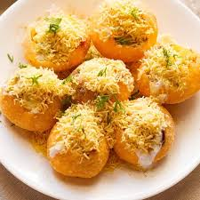

Dahi Puri

Description
Pani puri with the "pani" that splatters is another great idea for a quick snack. Super easy to make and once prepped, ingredients can be used over and over again until your heart is fulfilled
Ingredients
- 8 Puris (Gol Gappa)
- 1/2 cup boiled & chopped potatoes
- G1/4 cup chopped onion
- 2 & 1/2 tbsp tamarind chutney
-
Break open the puris and add 1 tbsp chopped and boiled potatoes and 1/2 tbsp chopped onions to each of them.
- Drizzle 1 tsp tamarin chutney, 1/2 tsp green chutney and 1/4 tsp garlic chutney over it.
- Pour 1 tbsp curd and sprinkle some sev and coriander leaves on each puri. Voila, your dahi puris are ready to eat. .